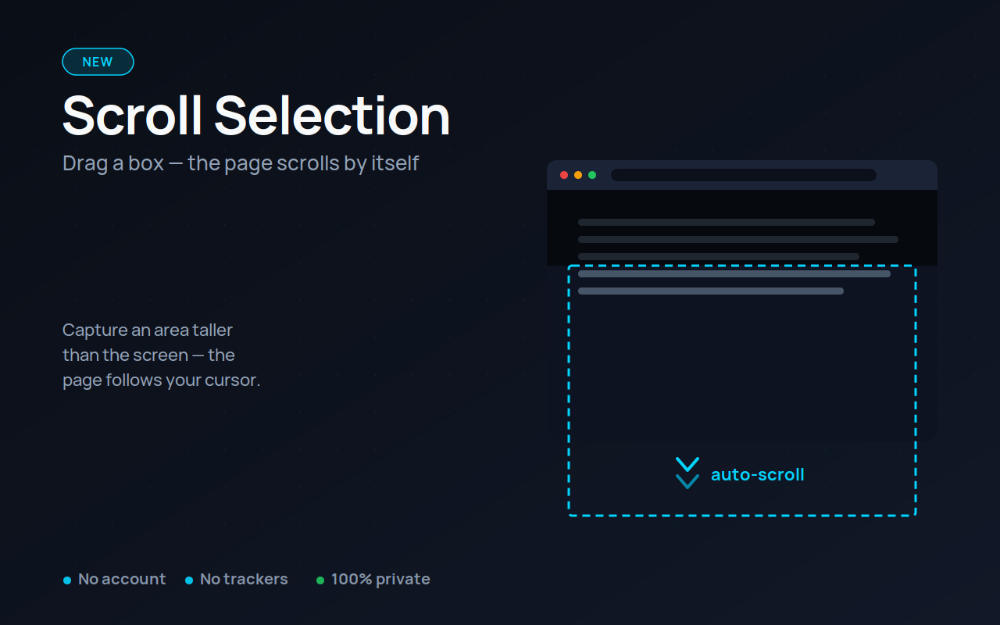
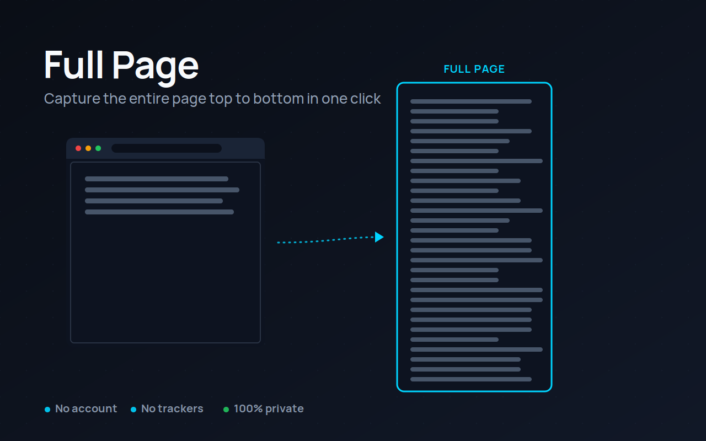
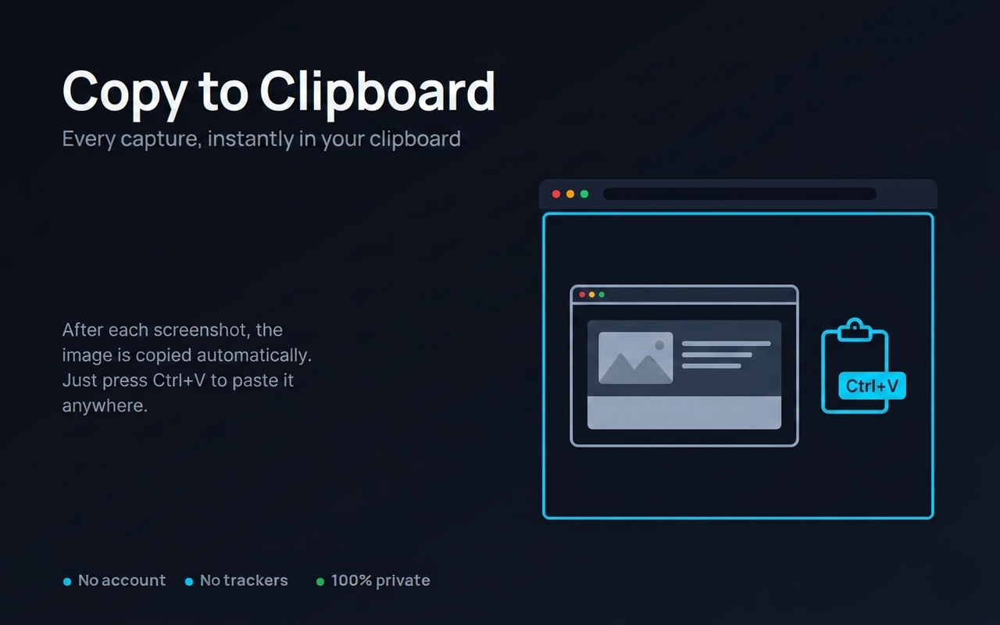
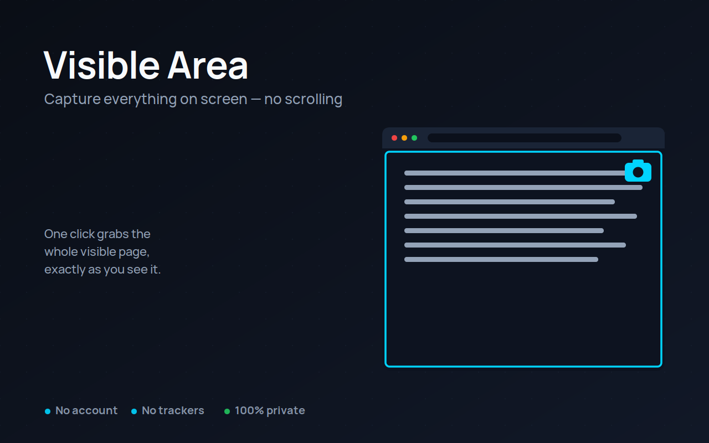
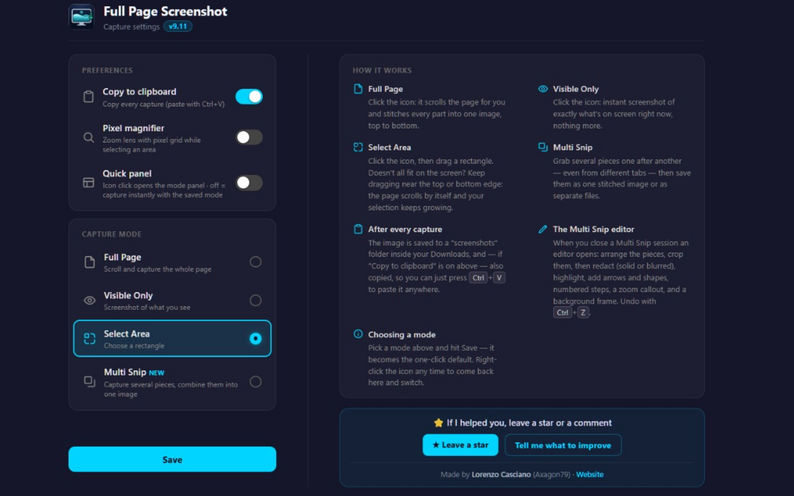

Capture the whole page.
Or exactly the part you need.
One-click full page screenshots, area selection that scrolls with you while you drag, and multi-snip collection across tabs — every capture copied straight to your clipboard, ready to paste with Ctrl+V.

Pick a mode once — then it's one click
Set your default with a right-click on the icon. Every capture after that is a single click.
Full Page
The page scrolls itself and every part is stitched into one image, top to bottom. Works on regular sites AND web apps that scroll inside an internal panel — webmail, dashboards, chat apps.
Select Area + Scroll Selection
Drag a rectangle around what you need. Doesn't all fit on the screen? Just keep dragging: the page scrolls by itself and your selection keeps growing — grab a long article or a whole chat in one clean shot. Almost no other extension can do this.
Visible Only
Instant screenshot of exactly what's on screen right now. No scrolling, no waiting — click, done.
Multi Snip
Snip several areas — from the same page or across different tabs, the collector follows you. Then save everything as one stitched image or as separate files. No other extension combines multi-snip with multi-tab.
Small, fast, and it does the job well




Everything stays on your device
Zero data collection, zero tracking, zero analytics.
Your screenshots go to your Downloads folder and your clipboard — nowhere else. No account, no sign-up, no cloud upload. Ever.
What it doesn't do (yet)
If it helps you, it's doing its job
If a page captures wrong, report it and it gets fixed — recent updates added support for webmail, web apps with internal scrolling, and sites where the body handles the scroll.
Add to Chrome — it's free